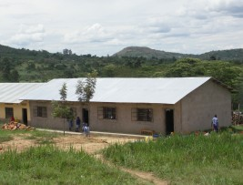
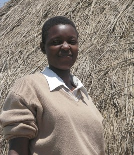
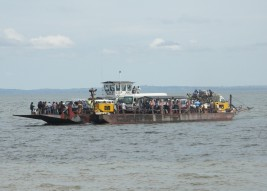
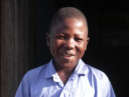
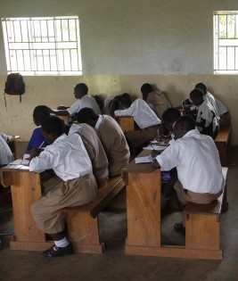

November 2005
Bram Moolenaar, treasurer of ICCF Holland, visited the Kibaale Children's
Centre in October-November 2005. This is his report.
I took quite a few pictures during my visit.
Click on the images below for an enlargement.
You can find more pictures here.

A new classroom block

Molly has finished S4 and hopes to continue in another school next year
|
|
|
Progress and complications
In the past years Uganda has seen an economic growth of about 5% per year.
This is very noticeable in the streets. You can see more vehicles driving
around, new shops, and better dressed people. Kibaale now has a real petrol
station! It is operated manually, since there is still no electricity, but it
works. Now we don't have to drive to Rakai to get petrol and diesel.
The Kibaale Childrens Centre has grown a little bit. There is one new block of
classrooms and a big rainwater tank at the primary school is almost finished.
This will provide clean water for the children. Water has always been a
problem in this area; last year I reported the borehole was fitted with a
filter to improve the water quality. It still works, but the amount of water
is not enough for the 700 children at the school.
Last year about a dozen of the children sponsored through ICCF Holland
finished secondary school and are now doing advanced level, business
school or another form of professional training. This means these children
have to move from their simple house in Kibaale to "the big city" and find a
place to live there. We need to pay for their housing, food, education,
books, etc. Obviously that is quite expensive; and since they are far away
from Kibaale and in many different places it's difficult to keep track of
these children.
The office at the project is currently struggling to manage this. Most of the
issues can be solved with money, but we need to make sure it is used for the
right purpose. There have been reports of a school where money went missing
and a student that faked a letter. We need to verify the requests, which takes
time and effort. I hope this won't result in some of the honest children
being slowed down in their studies.
I interviewed Namate Rose. She first studied in our school in Kibaale,
continued at advanced level in Masaka and has now finished university in
Jinja. She is confident that she did well and her exam results will be
positive. That will make her a qualified secondary school teacher. It is very
good to see one poor orphan that we helped become an educated person;
I hope many will follow.
|
Ssese Islands
One of the children I wanted to visit is in an agricultural school on
Ssese islands. Friends of Dave and Ruth Frith sponsor a couple of children
there, and so we planned to combine work with pleasure: visit the children and
have a day off at the nice islands. Well, it didn't work out as planned...
We managed to get to the ferry landing site quite early, and noticed it was
coming in. But instead of letting us aboard they brought in welding equipment
and started to fix the ferry. At first they said it would take a couple of
hours, but it turned out to be five! In the meantime a lot of vehicles
arrived that all wanted to go to Ssese islands. When they finally started
boarding it became a race to be the first on the ferry. This involved a lot
of brutal driving, resulting in scratches and broken lights. We didn't want to
risk damaging the vehicle and failed to get on board. Oh well, maybe next
year.
But the day wasn't finished yet. On our way back to Kibaale we found a huge
python. Someone apparently killed it and left it stretched on the road (see
the pictures page ). There was no way
around it, I had to drive over it.
After taking a couple of pictures we continued driving back to Kibaale and had
two flat tires! Makes you wonder whether it was caused by driving over the
snake. To make matters worse the vehicle had no spanner. Friendly Ugandans
stopped to help us, even though it was already dark.
Fortunately there was a second chance to make a trip. We went to lake Mburo
national park for a weekend. I'm glad I could see some of the beautiful
nature that Uganda has. Lake Mburo is the smallest park and the only one that
has zebras. I enjoyed driving around and seeing many wild animals, including
impala, buffalo, hippo and topi. No flat tires this time!
|
|
|

The ferry to Ssese islands
|

Dennis, one of the sponsored children I visited
|
|
|
Internet
Last year I failed to setup e-mail at the project, but I did learn from the
experience, and this time I came prepared. I brought several phones, a special
antenna and a bag with cables. Last year I found that with this antenna it is
possible to get a good signal for a mobile phone. I had heard that the phone
provider MTN had started to support GPRS, but I was not sure if it would
work in Kibaale, so that was the first thing to try out. I visited an MTN
service desk in Kampala before going down to Kibaale, and they entered
settings in the Nokia 6310 that I brought. The first day in Kibaale I managed
to make this phone work to connect my computer to the internet. Great!
The cost is reasonable, 5 shillings per Kbyte. A big advantage is that a
slow or failed connection will not make sending data more expensive. The
disadvantage is that browsing the internet quickly costs a few thousand
shillings (1500 shillings is a US dollar). Thus I had to find a way to do
e-mail efficiently, avoiding webmail. This kept me busy for a few weeks,
because several attempts failed.
I finally figured out that MTN has a firewall that blocks many ports.
Fortunately my friend Cor in Kampala could setup a simple POP/SMTP account for
me on standard ports and that worked. Hopefully it keeps on working the
coming year.
This still isn't ideal, a flat-rate connection would be preferred. Therefore
I also tried another system, called CDMA, but could not detect any signal in
Kibaale. The progress in Uganda continues, hopefully a more cost effective
solution will become available soon.
|
More...
At the project many of the usual activities continue. Arleen had restarted
her work to improve the quality of teaching. She does teacher training and
curriculum development. Trying the improve the quality of education is
something that will never stop. The clinic was busy as always. I joined the
nurses on a immunization trip. It continued until late, and we had to drive
back in the dark.
We worked hard to get the children make a Christmas card for their sponsor.
It's quite a challenge to help them write a good letter. Each year I ask them
to write in a way that the sponsor gets useful information. I was in the S1
classroom for this, and now know how hard it is to explain to these children
in remote Kibaale how to write something that a person in Holland would like to
read. The cultural difference is huge. They often end up writing a "thank
you" note, instead of relating important things that happened in their
family.
Photos and text are quite limited in what they can show about what goes on at
the project. I brought a video camera, interviewed several people, and filmed
the children in the classrooms, on the playground and in their homes. The
coming months I will edit the four hours of video into to a short documentary.
People with sufficient bandwidth will be able to download it.
|
|
|

S1 students writing Christmas cards
|
Plans
The coming year the center will concentrate on quality improvement. That
means we do not start new activities but do better at what we are currently
doing. A problem is that this isn't popular with people making donations, as
we will not be able to show a new building; but we do need to invest in better
guidance for the older students, repair some of the buildings, continue
teacher training, get more books for the library, etc. We are helping 700
children, and we will do our best to help them grow and become responsible
adults.
Bram Moolenaar
more pictures
top
|

{kind=link}
{kind=link}
{kind=link}
{kind=link}
{kind=link}